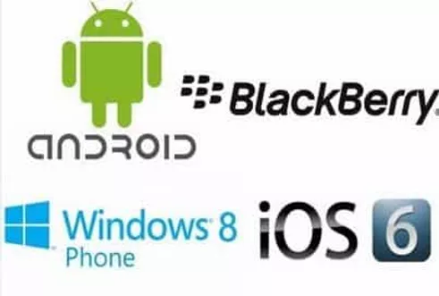

SISTEMAS OPERATIVOS MÓVIL
¿Qué son?
Un sistema operativo (SO en español, OS en inglés por operating system) para móviles es un conjunto de programas y órdenes capaces de ejecutarse sobre el hardware del dispositivo para satisfacer las necesidades del usuario. En los teléfonos móviles, estas suelen ser de conexión a la red, por lo que el SO móvil está muy orientado a la conectividad inalámbrica. Esto lo consigue gestionando la memoria y cargando nuevos programas. Además, el sistema operativo es la parte del dispositivo que permite interactuar y darle órdenes al teléfono. Su principal tarea es administrar tareas y recursos del dispositivo, coordinar las tareas de software en base al hardware y organizar los archivos en directorios. Es, por tanto, un intermediario entre usuario y hardware.
Funciones de los sistemas operativos
Cada una de las capas del sistema operativo tiene su propia función y proceso. El funcionamiento del sistema operativo depende del funcionamiento de cada una de estas partes. En líneas generales, el SO será el encargado de administrar todos los recursos del teléfono móvil, otorgando para ello prioridades a las diferentes memorias y programas. Así, cuando un usuario pulsa la pantalla para abrir una aplicación, redirige los privilegios de ejecución de dicha aplicación para que sea esta (y no otra) la que se ejecute en primer plano y sobre la pantalla. Se puede pensar en el sistema operativo del móvil como en una especie de policía de tráfico cuya labor es la de redirigir los flujos de información y determinar cuáles tienen preferencia.
Sistemas operativos que existen para PC
En dispositivos móviles destacan los sistemas operativos de Android e iOS, que copan la cuota de mercado con un duopolio, seguidos por Blackberry, Windows Phone u otros. Aunque iOS y Android parecen dos sistemas homogéneos, lo cierto es que existen muchas diferencias entre sus distintas generaciones. Particularmente en Android:
Marca de Smartphone
Pues sí, cada fabricante de teléfonos móviles elige el sistema operativo que introducirá en su Smartphone, intentando mejorar a la competencia y dar el mejor servicio a sus usuarios. Vamos a ver aquí las marcas más vendidas y el sistema operativo que utilizan, recordando que en cualquier momento el fabricante puede cambiar de sistema operativo por estrategia comercial o por cualquier otro motivo.